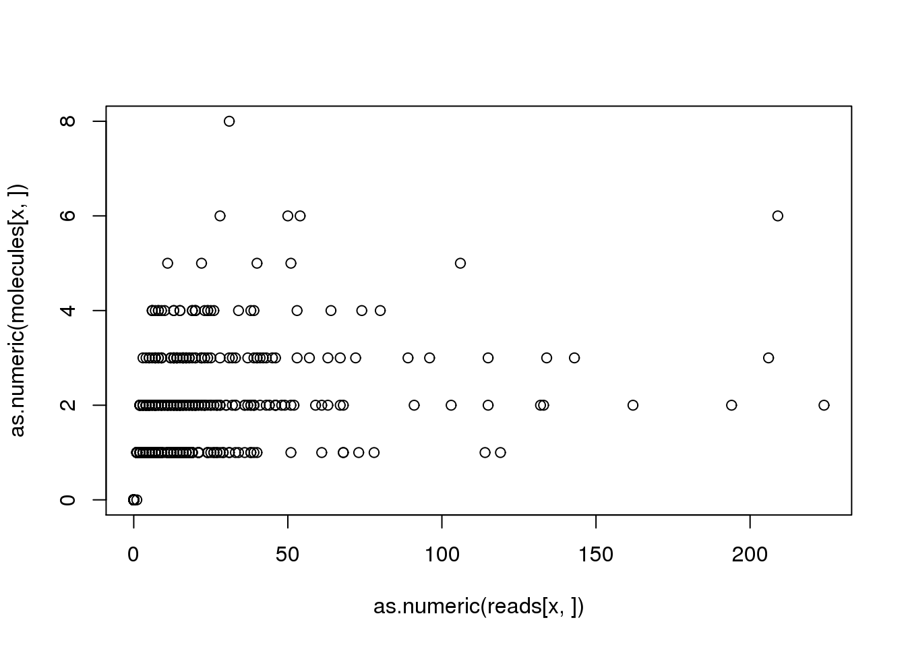
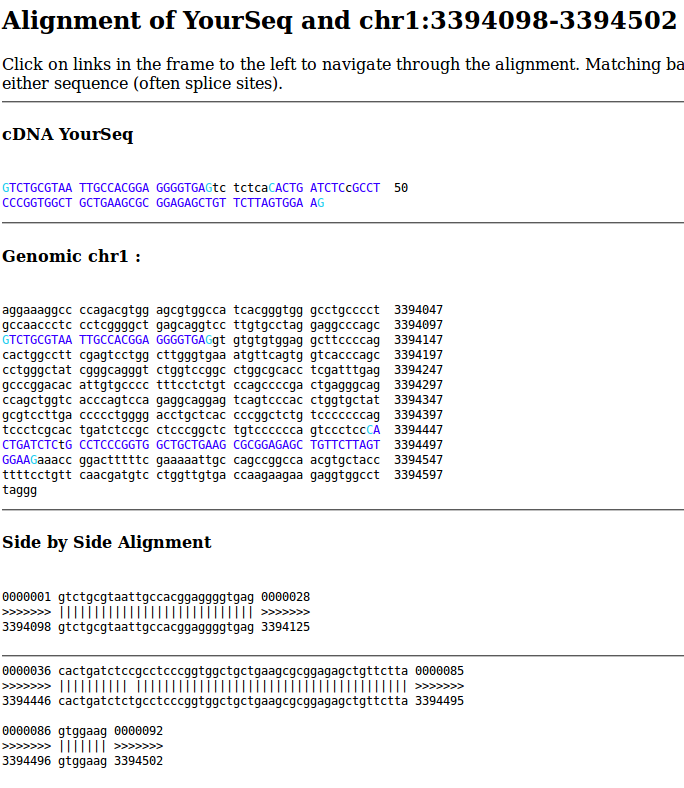
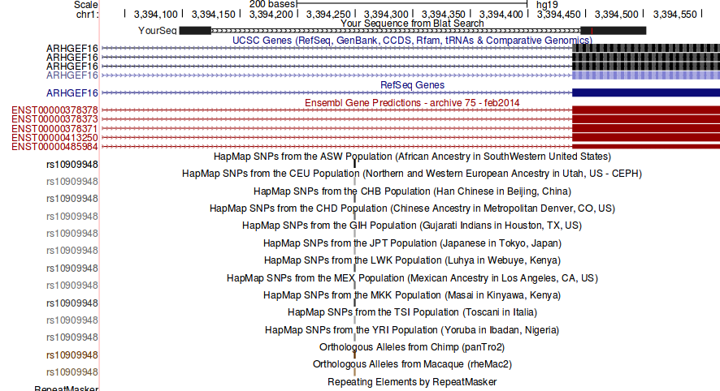

Last updated: 2016-02-23
Code version: 70509eb9a08ffe0fe459efc9de23d89ec424fe99
Since my last attempt at debugging, I re-ran the deduplication step and also fixed a bug in the initial gene filtering step. The latter made all the tests in test-summary-counts.R pass, but there are still problems with the reads to molecules conversion tests. This analysis continues the search for bugs lurking in the sequence processsing pipeline.
Input annotation.
anno <- read.table("../data/annotation.txt", header = TRUE,
stringsAsFactors = FALSE)Input read counts.
reads <- read.table("../data/reads.txt", header = TRUE,
stringsAsFactors = FALSE)
stopifnot(ncol(reads) == nrow(anno),
colnames(reads) == anno$sample_id)Input molecule counts.
molecules <- read.table("../data/molecules.txt", header = TRUE,
stringsAsFactors = FALSE)
stopifnot(ncol(molecules) == nrow(anno),
colnames(molecules) == anno$sample_id)Input list of quality single cells.
quality_single_cells <- scan("../data/quality-single-cells.txt",
what = "character")How often is this a problem? How many genes does it affect? For affected genes, how many samples are affected?
discordant_zeros <- (reads == 0) != (molecules == 0)
all_genes <- rowSums(discordant_zeros)
names(all_genes) <- rownames(reads)
problem_genes <- all_genes[all_genes > 0]
length(problem_genes)[1] 959length(problem_genes) / length(all_genes)[1] 0.05319503summary(problem_genes) Min. 1st Qu. Median Mean 3rd Qu. Max.
1.000 1.000 1.000 1.441 1.000 19.000 This problem affects 959 out of the 18028 total genes (5.32%). For these problem genes, the median number of affected samples is 1 and the max number of affected samples is 19.
Next I identify a problem gene-sample combination so that I can track down what happened.
x <- names(problem_genes)[1]
plot(as.numeric(reads[x, ]), as.numeric(molecules[x, ]))
problem_sample <- colnames(reads)[discordant_zeros[x, ] == TRUE]
reads[x, problem_sample][1] 1molecules[x, problem_sample][1] 0For gene ENSG00000130762, the sample NA19239.r1.B07 was assigned 1 reads but 0 molecules. What happened?
Note that NA19239.r1.B07 is a high quality single cell.
problem_sample %in% quality_single_cells[1] TRUENow I am going to search for the bug by inspecting the intermediate data files from the sequence processsing pipeline.
The following chunks are all Bash commands run from the data directory.
opts_chunk$set(engine = "bash")
opts_knit$set(root.dir = "/mnt/gluster/home/jdblischak/ssd")First I confirm that this difference is observed at the featureCounts step:
# reads per lane
grep ENSG00000130762 counts/19239.1.B07*trim.sickle.sorted.genecounts.txt | cut -f1,7counts/19239.1.B07.TCAGTGTG.L001.R1.C72JMACXX.trim.sickle.sorted.genecounts.txt:ENSG00000130762 0
counts/19239.1.B07.TCAGTGTG.L005.R1.C6WYKACXX.trim.sickle.sorted.genecounts.txt:ENSG00000130762 0
counts/19239.1.B07.TCAGTGTG.L006.R1.C6WURACXX.trim.sickle.sorted.genecounts.txt:ENSG00000130762 1# molecules per lane
grep ENSG00000130762 counts/19239.1.B07*trim.sickle.sorted.rmdup.genecounts.txt | cut -f1,7counts/19239.1.B07.TCAGTGTG.L001.R1.C72JMACXX.trim.sickle.sorted.rmdup.genecounts.txt:ENSG00000130762 0
counts/19239.1.B07.TCAGTGTG.L005.R1.C6WYKACXX.trim.sickle.sorted.rmdup.genecounts.txt:ENSG00000130762 0
counts/19239.1.B07.TCAGTGTG.L006.R1.C6WURACXX.trim.sickle.sorted.rmdup.genecounts.txt:ENSG00000130762 0# molecules per sample
grep ENSG00000130762 counts/19239.1.B07.trim.sickle.sorted.combined.rmdup.genecounts.txt | cut -f1,7ENSG00000130762 0So one lane has one read, and that read is not converted to a molecule either for the molecule per lane or per sample file.
Next I use the featureCounts assignments per read to obtain the read name.
grep ENSG00000130762 counts/19239.1.B07.TCAGTGTG.L006.R1.C6WURACXX.trim.sickle.sorted.bam.featureCountsHWI-700819F:304:C6WURACXX:6:1115:10445:85729:UMI_GAGTAGGG Assigned ENSG00000130762 *And just to confirm that it is not in the corresponding molecules file.
grep ENSG00000130762 counts/19239.1.B07.TCAGTGTG.L006.R1.C6WURACXX.trim.sickle.sorted.rmdup.bam.featureCounts
exit 0Is it in the rmdup bam file? Presumably not since it was not passed to featureCounts.
read=`grep ENSG00000130762 counts/19239.1.B07.TCAGTGTG.L006.R1.C6WURACXX.trim.sickle.sorted.bam.featureCounts | cut -f1`
echo "The read is $read"
echo "Checking rmdup bam per lane:"
samtools view bam-rmdup-umi/19239.1.B07.TCAGTGTG.L006.R1.C6WURACXX.trim.sickle.sorted.rmdup.bam | grep $read
echo "Checking rmdup bam per sample:"
samtools view bam-rmdup-umi/19239.1.B07.trim.sickle.sorted.combined.rmdup.bam | grep $read
echo "Checking combined bam:"
samtools view bam-combined/19239.1.B07.trim.sickle.sorted.combined.bam | grep $read
echo "Checking reads per lane bam:"
samtools view bam-processed/19239.1.B07.TCAGTGTG.L006.R1.C6WURACXX.trim.sickle.sorted.bam | grep $read
exit 0The read is HWI-700819F:304:C6WURACXX:6:1115:10445:85729:UMI_GAGTAGGG
Checking rmdup bam per lane:
Checking rmdup bam per sample:
Checking combined bam:
HWI-700819F:304:C6WURACXX:6:1115:10445:85729:UMI_GAGTAGGG 0 chr1 3394442 56 31S61M * 0 0 GTCTGCGTAATTGCCACGGAGGGGTGAGTCTCTCACACTGATCTCCGCCTCCCGGTGGCTGCTGAAGCGCGGAGAGCTGTTCTTAGTGGAAG B7BFFFFBFFFBBBBFFFF0<B<'B000BF077<'<7BF7<BB77<BFB<BBBB7BB0<<BB<B<BBB7<B<B<B<BBBBBBFBBBBBB<BB HI:i:1 NH:i:1 NM:i:2
Checking reads per lane bam:
HWI-700819F:304:C6WURACXX:6:1115:10445:85729:UMI_GAGTAGGG 0 chr1 3394442 56 31S61M * 0 0 GTCTGCGTAATTGCCACGGAGGGGTGAGTCTCTCACACTGATCTCCGCCTCCCGGTGGCTGCTGAAGCGCGGAGAGCTGTTCTTAGTGGAAG B7BFFFFBFFFBBBBFFFF0<B<'B000BF077<'<7BF7<BB77<BFB<BBBB7BB0<<BB<B<BBB7<B<B<B<BBBBBBFBBBBBB<BB HI:i:1 NH:i:1 NM:i:2OK. So this read is lost during the remove duplicate step. But why? Are there other reads that map to this position? I’ll focus on the lane file since it is smaller and displays the same problem.
samtools view bam-processed/19239.1.B07.TCAGTGTG.L006.R1.C6WURACXX.trim.sickle.sorted.bam chr1:3394441-3394443HWI-700819F:304:C6WURACXX:6:1101:2320:21285:UMI_GAGTAGGG 0 chr1 3394437 56 26S66M * 0 0 GTCTGCGTAATTGCCACGGAGGGGTGAGTCTCTCCCACTGATCTCCGCCTCCCGGTGGCTGCTGAAGCGCGGAGAGCTGTTCTTAGTGGAAG FFFFFIIFIIIIIIIIIIIFFIIIFFFFBFFIIIIIIIFFFFFFFFFFFFFFFFF<BBFBFFFFFBBBFBFFFFFFBFFBBFFFFFBFBFFF HI:i:1 NH:i:1 NM:i:2
HWI-700819F:304:C6WURACXX:6:1202:1354:7385:UMI_GAGTAGGG 0 chr1 3394437 56 26S66M * 0 0 GTCTGCGTAATTGCCACGGAGGGGTGAGTCTCTCCCACTGATCTCCGCCTCCCGGTGGCTGCTGAAGCGCGGAGAGCTGTTCTTAGTGGAAG FFFFFIIFIIIIIIIIIIIIIIIIFIIIFFIIIIIIIIFFFFFFFFFFFFFFFFFBBFFBFFFFFFFBFFFFFFBFFFFFFFFFFFFFFFFF HI:i:1 NH:i:1 NM:i:2
HWI-700819F:304:C6WURACXX:6:1301:15366:47559:UMI_GAGTAGGG 0 chr1 3394437 56 26S66M * 0 0 GTCTGCGTAATTGCCGCGGAGGGGTGAGTCTCTCCCACTGATCTCCGCCTCCCGGTGGCTGCTGAAGCGCGGAGAGCTGTTCTTAGTGGAAG F<FFFFIBFIIIFFIBFIIFFFIIBFFFFFFFFBFFFFFBBFFFFFBFFFBFFFFFBFFBFFFFFFFBBFFBFFFFFBFBBBFFFB0<BBFF HI:i:1 NH:i:1 NM:i:2
HWI-700819F:304:C6WURACXX:6:1302:19839:75968:UMI_GAGTAGGG 0 chr1 3394437 56 26S66M * 0 0 GTCTGCGTAATTGCCACGGAGGGGTGAGTCTCTCCCACTGATCTCCGCCTCCCGGTGGCTGCTGAAGCGCGGAGAGCTGTTCTTAGTGGAAG FFFFFIFFFFFFFIIIIIIFFFIIFIIFFIFIFFBFFIFFFFFFFFFFFFFFFFFBFBBBBFFFFFFBFFFFFBBBFFFBBFBBBFBFBBBF HI:i:1 NH:i:1 NM:i:2
HWI-700819F:304:C6WURACXX:6:2209:1548:85704:UMI_GAGTAGGG 0 chr1 3394437 56 26S66M * 0 0 GTCTGCGTAATTGCCACGGAGGGGTGAGTCTCTCCCACTGATCTCCGCCTCCCGGTGGCTGCTGAAGCGCGGAGAGCTGTTCTTAGTGGAAG FFFFFFFFFIIIIIIIIIIIFFFBBFFFFIFFIIIIIIFFFFFFFFFFFFFFFFBBFFFBFFBBFFFFFFFFFFBFFFFFFFFFFBBBBFFF HI:i:1 NH:i:1 NM:i:2
HWI-700819F:304:C6WURACXX:6:2306:7973:18259:UMI_GAGTAGGG 0 chr1 3394437 56 26S66M * 0 0 GTCTGCGTAATTGCCACGGAGGGGTGAGTCTCTCCCACTGATCTCCGCCTCCCGGTGGCTGCTGAAGCGCGGAGAGCTGTTCTTAGTGGAAG FFFFFIIFFFFIIIIIFIIFFFIIFFIIIIIIFFIIIIFFFFFFFFFFFFFBFFFFFFFFFFFFFFBBFFFBFFFFFFFFBFFBFFBBFFFF HI:i:1 NH:i:1 NM:i:2
HWI-700819F:304:C6WURACXX:6:2310:7455:94209:UMI_GAGTAGGG 0 chr1 3394437 56 26S66M * 0 0 GTCTGCGTAATTGCCACGGAGGGGTGAGTCTCTCCCACTGATCTCCGCCTCCCGGTGGCTGCTGAAGCGCGGAGAGCTGTTCTTAGTGGAAG FFFFFIIIIIIIIIIIIIIIIIIIFIIIIIIIIIIIIIFFFFFFFFFFFFFFFFFFFFFFFFFFFFFFFFFFFFFFFFFFFFFFFFFFFFFF HI:i:1 NH:i:1 NM:i:2
HWI-700819F:304:C6WURACXX:6:2316:16378:58221:UMI_GAGTAGGG 0 chr1 3394437 56 26S66M * 0 0 GTCTGCGTAATTGCCACGGAGGGGTGAGTCTCTCCCACTGATCTCCGCCTCCCGGTGGCTGCTGAAGCGCGGAGAGCTGTTCTTAGTGGAAG FFFFFIIIIIIIIIIIIIIFIIIIFFBFFFIIIIIIIIFFFFFFFFFFFFFFFFFBFFFFFFFFFFFFFFFFFFFFFFFFFFFFFFFFFFFF HI:i:1 NH:i:1 NM:i:2
HWI-700819F:304:C6WURACXX:6:1115:10445:85729:UMI_GAGTAGGG 0 chr1 3394442 56 31S61M * 0 0 GTCTGCGTAATTGCCACGGAGGGGTGAGTCTCTCACACTGATCTCCGCCTCCCGGTGGCTGCTGAAGCGCGGAGAGCTGTTCTTAGTGGAAG B7BFFFFBFFFBBBBFFFF0<B<'B000BF077<'<7BF7<BB77<BFB<BBBB7BB0<<BB<B<BBB7<B<B<B<BBBBBBFBBBBBB<BB HI:i:1 NH:i:1 NM:i:2No. There are not other reads that map to this exact position. However, the reads nearby all have the same UMI and are strongly soft clipped at the 5’ end. This is suspicious. Next I investigate the locus on the UCSC genome browser.
I searched for this sequencing using BLAT.
GTCTGCGTAATTGCCACGGAGGGGTGAGTCTCTCACACTGATCTCCGCCTCCCGGTGGCTGCTGAAGCGCGGAGAGCTGTTCTTAGTGGAAG
It is 92 bp long. 85 bp mapped to the genome in two parts. The first 28 bp map to intergenic sequence, followed by a gap of 7 bp, and the latter 57 bp map to the exon of ENSG00000130762 (ARHGEF16) with one mismatch.


Now I can see why it was soft clipped. And this is how Subread is expected to work. It is how it is able to map exon-exon junctions in RNA-seq data quickly. As long as it can map one end of the fragment (sufficient subreads), this is sufficient for gene counting. From the User’s Guide:
Subread uses the largest mappable region in the read to determine its mapping location, therefore it automatically determines whether a global alignment or a local alignment should be found for the read. For the exon-spanning reads in a RNA-seq dataset, Subread performs local alignments for them to find the target regions in the reference genome that have the largest overlap with them. Note that Subread does not perform global alignments for the exon-spanning reads and it soft clips those read bases which could not be mapped. However, the Subread mapping result is suffcient for carrying out the gene-level expression analysis using RNA-seq data, because the mapped read bases can be reliably used to assign reads, including both exonic reads and exon-spanning reads, to genes.
But because of the soft clipping, Subread assigns it the position chr1:3394442. The CIGAR is 31S61M. This doesn’t exactly match the BLAT output, which is 57 bp and starts 4 bp downstream at chr1:3394446. Subread matches the 4 upstream bases in the read CTCA to the genome CTCC, which is completely reasonable because it is only 1 mismatch. Because this most 5’ mapped base in the exon of ENSG00000130762 (ARHGEF16), featureCounts correctly assigns it to this gene.
I observed that there were multiple heavily soft-clipped reads with the same UMI mapping closely in the genome. Subread assigns the start position to the first base of the mapped portion of the read, and then featureCounts uses this start position to assign the read to a gene. However, it appears that UMI-tools is accounting for the soft-clipping.
UMI-tools has a command line option –soft-clip-threshold. However, this is not really what I am interested in. I would need a filter to limit reads that have too many bases soft-clipped at the 5’ end. This option only looks at the 3’ end, and it only affects the other option –spliced-is-unique, which will treat two reads with the same UMI and start position as different molecules if they are spliced in different ways.
–spliced-is-unique
Causes two reads that start in the same position on the same
strand and having the same UMI to be considered unique if one is spliced
and the other is not. (Uses the ‘N’ cigar operation to test for
splicing)–soft-clip-threshold (int)
Mappers that soft clip, will sometimes do so rather than mapping a
spliced read if there is only a small overhang over the exon
junction. By setting this option, you can treat reads with at least
this many bases soft-clipped at the 3’ end as spliced.
More relevant to my problem, they have an Issue that discusses how soft clipping is used when determining the start position of the read. They use pysam to access the mapped position and the CIGAR information, and use the CIGAR information to adjust the start position (their code). Maybe once the soft clipping is accounted for, all these reads may map to the same start location. Following the pysam manual, I should be able to investigate this quickly using example boiler plate code. Note that I need to run this with Python 2 because I can’t install pysam for Python 3 on the cluster.
import pysam
fname = "bam-processed/19239.1.B07.TCAGTGTG.L006.R1.C6WURACXX.trim.sickle.sorted.bam"
samfile = pysam.AlignmentFile(fname, "rb")
for read in samfile.fetch("chr1", 3394441, 3394443):
print read.tostring(samfile)
print "CIGAR:", read.cigarstring, "and as a tuple:", read.cigartuples
print "Is read on reverse strand?", read.is_reverse
print "The query sequence starts at", read.query_alignment_start
print "The first non-soft-clipped base maps to:", read.reference_start + 1
print "The first soft-clipped base maps to:", read.reference_start + 1 - read.cigartuples[0][1]
print "\n"
samfile.close()HWI-700819F:304:C6WURACXX:6:1101:2320:21285:UMI_GAGTAGGG 0 chr1 3394437 56 26S66M * 0 0 GTCTGCGTAATTGCCACGGAGGGGTGAGTCTCTCCCACTGATCTCCGCCTCCCGGTGGCTGCTGAAGCGCGGAGAGCTGTTCTTAGTGGAAG FFFFFIIFIIIIIIIIIIIFFIIIFFFFBFFIIIIIIIFFFFFFFFFFFFFFFFF<BBFBFFFFFBBBFBFFFFFFBFFBBFFFFFBFBFFF HI:i:1 NH:i:1 NM:i:2
CIGAR: 26S66M and as a tuple: [(4, 26), (0, 66)]
Is read on reverse strand? False
The query sequence starts at 26
The first non-soft-clipped base maps to: 3394437
The first soft-clipped base maps to: 3394411
HWI-700819F:304:C6WURACXX:6:1202:1354:7385:UMI_GAGTAGGG 0 chr1 3394437 56 26S66M * 0 0 GTCTGCGTAATTGCCACGGAGGGGTGAGTCTCTCCCACTGATCTCCGCCTCCCGGTGGCTGCTGAAGCGCGGAGAGCTGTTCTTAGTGGAAG FFFFFIIFIIIIIIIIIIIIIIIIFIIIFFIIIIIIIIFFFFFFFFFFFFFFFFFBBFFBFFFFFFFBFFFFFFBFFFFFFFFFFFFFFFFF HI:i:1 NH:i:1 NM:i:2
CIGAR: 26S66M and as a tuple: [(4, 26), (0, 66)]
Is read on reverse strand? False
The query sequence starts at 26
The first non-soft-clipped base maps to: 3394437
The first soft-clipped base maps to: 3394411
HWI-700819F:304:C6WURACXX:6:1301:15366:47559:UMI_GAGTAGGG 0 chr1 3394437 56 26S66M * 0 0 GTCTGCGTAATTGCCGCGGAGGGGTGAGTCTCTCCCACTGATCTCCGCCTCCCGGTGGCTGCTGAAGCGCGGAGAGCTGTTCTTAGTGGAAG F<FFFFIBFIIIFFIBFIIFFFIIBFFFFFFFFBFFFFFBBFFFFFBFFFBFFFFFBFFBFFFFFFFBBFFBFFFFFBFBBBFFFB0<BBFF HI:i:1 NH:i:1 NM:i:2
CIGAR: 26S66M and as a tuple: [(4, 26), (0, 66)]
Is read on reverse strand? False
The query sequence starts at 26
The first non-soft-clipped base maps to: 3394437
The first soft-clipped base maps to: 3394411
HWI-700819F:304:C6WURACXX:6:1302:19839:75968:UMI_GAGTAGGG 0 chr1 3394437 56 26S66M * 0 0 GTCTGCGTAATTGCCACGGAGGGGTGAGTCTCTCCCACTGATCTCCGCCTCCCGGTGGCTGCTGAAGCGCGGAGAGCTGTTCTTAGTGGAAG FFFFFIFFFFFFFIIIIIIFFFIIFIIFFIFIFFBFFIFFFFFFFFFFFFFFFFFBFBBBBFFFFFFBFFFFFBBBFFFBBFBBBFBFBBBF HI:i:1 NH:i:1 NM:i:2
CIGAR: 26S66M and as a tuple: [(4, 26), (0, 66)]
Is read on reverse strand? False
The query sequence starts at 26
The first non-soft-clipped base maps to: 3394437
The first soft-clipped base maps to: 3394411
HWI-700819F:304:C6WURACXX:6:2209:1548:85704:UMI_GAGTAGGG 0 chr1 3394437 56 26S66M * 0 0 GTCTGCGTAATTGCCACGGAGGGGTGAGTCTCTCCCACTGATCTCCGCCTCCCGGTGGCTGCTGAAGCGCGGAGAGCTGTTCTTAGTGGAAG FFFFFFFFFIIIIIIIIIIIFFFBBFFFFIFFIIIIIIFFFFFFFFFFFFFFFFBBFFFBFFBBFFFFFFFFFFBFFFFFFFFFFBBBBFFF HI:i:1 NH:i:1 NM:i:2
CIGAR: 26S66M and as a tuple: [(4, 26), (0, 66)]
Is read on reverse strand? False
The query sequence starts at 26
The first non-soft-clipped base maps to: 3394437
The first soft-clipped base maps to: 3394411
HWI-700819F:304:C6WURACXX:6:2306:7973:18259:UMI_GAGTAGGG 0 chr1 3394437 56 26S66M * 0 0 GTCTGCGTAATTGCCACGGAGGGGTGAGTCTCTCCCACTGATCTCCGCCTCCCGGTGGCTGCTGAAGCGCGGAGAGCTGTTCTTAGTGGAAG FFFFFIIFFFFIIIIIFIIFFFIIFFIIIIIIFFIIIIFFFFFFFFFFFFFBFFFFFFFFFFFFFFBBFFFBFFFFFFFFBFFBFFBBFFFF HI:i:1 NH:i:1 NM:i:2
CIGAR: 26S66M and as a tuple: [(4, 26), (0, 66)]
Is read on reverse strand? False
The query sequence starts at 26
The first non-soft-clipped base maps to: 3394437
The first soft-clipped base maps to: 3394411
HWI-700819F:304:C6WURACXX:6:2310:7455:94209:UMI_GAGTAGGG 0 chr1 3394437 56 26S66M * 0 0 GTCTGCGTAATTGCCACGGAGGGGTGAGTCTCTCCCACTGATCTCCGCCTCCCGGTGGCTGCTGAAGCGCGGAGAGCTGTTCTTAGTGGAAG FFFFFIIIIIIIIIIIIIIIIIIIFIIIIIIIIIIIIIFFFFFFFFFFFFFFFFFFFFFFFFFFFFFFFFFFFFFFFFFFFFFFFFFFFFFF HI:i:1 NH:i:1 NM:i:2
CIGAR: 26S66M and as a tuple: [(4, 26), (0, 66)]
Is read on reverse strand? False
The query sequence starts at 26
The first non-soft-clipped base maps to: 3394437
The first soft-clipped base maps to: 3394411
HWI-700819F:304:C6WURACXX:6:2316:16378:58221:UMI_GAGTAGGG 0 chr1 3394437 56 26S66M * 0 0 GTCTGCGTAATTGCCACGGAGGGGTGAGTCTCTCCCACTGATCTCCGCCTCCCGGTGGCTGCTGAAGCGCGGAGAGCTGTTCTTAGTGGAAG FFFFFIIIIIIIIIIIIIIFIIIIFFBFFFIIIIIIIIFFFFFFFFFFFFFFFFFBFFFFFFFFFFFFFFFFFFFFFFFFFFFFFFFFFFFF HI:i:1 NH:i:1 NM:i:2
CIGAR: 26S66M and as a tuple: [(4, 26), (0, 66)]
Is read on reverse strand? False
The query sequence starts at 26
The first non-soft-clipped base maps to: 3394437
The first soft-clipped base maps to: 3394411
HWI-700819F:304:C6WURACXX:6:1115:10445:85729:UMI_GAGTAGGG 0 chr1 3394442 56 31S61M * 0 0 GTCTGCGTAATTGCCACGGAGGGGTGAGTCTCTCACACTGATCTCCGCCTCCCGGTGGCTGCTGAAGCGCGGAGAGCTGTTCTTAGTGGAAG B7BFFFFBFFFBBBBFFFF0<B<'B000BF077<'<7BF7<BB77<BFB<BBBB7BB0<<BB<B<BBB7<B<B<B<BBBBBBFBBBBBB<BB HI:i:1 NH:i:1 NM:i:2
CIGAR: 31S61M and as a tuple: [(4, 31), (0, 61)]
Is read on reverse strand? False
The query sequence starts at 31
The first non-soft-clipped base maps to: 3394442
The first soft-clipped base maps to: 3394411This is the problem!!!! The problem read that maps to ENSG00000130762 (ARHGEF16) is removed by dedup_umi.py. This is because even though its first non-soft-clipped base starts at a different position in the genome compared to the other reads, its first soft-clipped base matches the other reads with the same UMI. This small 4 bp difference from 3,394,437 to 3,394,442 makes a huge difference because the exon starts at 3,394,439!
How to handle this mapping based artifact? One option would be to filter out reads that have many soft-clipped at the 5’ end. I worry this might be too blunt an instrument though. Subread relies on the ability to have lots of soft-clipping to map exon-exon reads. Also, I have observed that some ERCC reads begin with soft-clipped sequence (presumably adapter or some other unwanted sequence), and I wouldn’t want to lose those.
Since the 5’ start position of these reads is proving to be so critical, another option would be to use a more exact mapper. Subjunc should do the job. From the User’s Guide:
To get the full alignments for exon-spanning RNA-seq reads, the Subjunc aligner can be used. Subjunc is designd to discover exon-exon junctions from using RNA-seq data, but it performs full alignments for all the reads at the same time. The Subjunc mapping results should be used for detecting genomic variations in RNA-seq data, allele-specific expression analysis and exon-level gene expression analysis.
To test if Subjunc can solve the problem, I created a new bam file that contains these soft-clipped reads.
import pysam
fname = "bam-processed/19239.1.B07.TCAGTGTG.L006.R1.C6WURACXX.trim.sickle.sorted.bam"
infile = pysam.AlignmentFile(fname, "rb")
outfile = pysam.AlignmentFile("subjunc-test.bam", "wb", template = infile)
count = 0
for read in infile.fetch("chr1", 3394441, 3394443):
count += 1
outfile.write(read)
infile.close()
outfile.close()
print "Number of sequences written to file:", countNumber of sequences written to file: 9And then I can run subjunc with the following command. The main difference between running subread-align and subjunc is the flag -t is no longer used (see my script map-subread.sh).
# Not actually run as part of this document because too memory intensive
subjunc -i genome/combined -r subjunc-test.bam -u --BAMinput > subjunc-test-results.bam
# The output is copy-pasted below:
========== _____ _ _ ____ _____ ______ _____
===== / ____| | | | _ \| __ \| ____| /\ | __ \
===== | (___ | | | | |_) | |__) | |__ / \ | | | |
==== \___ \| | | | _ <| _ /| __| / /\ \ | | | |
==== ____) | |__| | |_) | | \ \| |____ / ____ \| |__| |
========== |_____/ \____/|____/|_| \_\______/_/ \_\_____/
v1.5.0-p1
//============================= subjunc setting ==============================\\
|| ||
|| Function : Read alignment + Junction detection (RNA-Seq) ||
|| Threads : 1 ||
|| Input file : subjunc-test.bam (BAM) ||
|| Output method : STDOUT (BAM) ||
|| Index name : genome/combined ||
|| Phred offset : 33 ||
|| ||
|| Min votes : 1 / 14 ||
|| Allowed mismatch : 3 bases ||
|| Max indels : 5 ||
|| # of Best mapping : 1 ||
|| Unique mapping : yes ||
|| Hamming distance : yes ||
|| Quality scores : no ||
|| ||
\\===================== http://subread.sourceforge.net/ ======================//
//====================== Running (23-Feb-2016 20:20:14) ======================\\
|| ||
|| The input BAM file contains single-end reads. ||
|| Convert the input BAM file... ||
|| The input file contains base space reads. ||
|| The range of Phred scores observed in the data is [6,40] ||
|| Load the 1-th index block... ||
|| Map reads... ||
|| Finish the 9 reads... ||
|| ||
|| Completed successfully. ||
|| ||
\\============================================================================//
//================================= Summary ==================================\\
|| ||
|| Processed : 9 reads ||
|| Mapped : 9 reads (100.0%) ||
|| ||
|| Running time : 1.3 minutes ||
|| ||
\\===================== http://subread.sourceforge.net/ ======================//And viewing the results.
samtools view subjunc-test-results.bam | cut -f3-6chr1 3394098 57 28M313N64M
chr1 3394098 57 28M313N64M
chr1 3394098 56 28M313N64M
chr1 3394098 57 28M313N64M
chr1 3394098 57 28M313N64M
chr1 3394098 57 28M313N64M
chr1 3394098 57 28M313N64M
chr1 3394098 57 28M313N64M
chr1 3394098 55 28M313N6M58SThis does solve the problem! The 5’ end of the reads are all mapped, and most importantly they are all mapped to the same position. This reflects the reality that these all originate from the same molecule.
Now to re-map everything with Subjunc. Because it is more precise than Subread, this is going to take even longer!
sessionInfo()R version 3.2.0 (2015-04-16)
Platform: x86_64-unknown-linux-gnu (64-bit)
locale:
[1] LC_CTYPE=en_US.UTF-8 LC_NUMERIC=C
[3] LC_TIME=en_US.UTF-8 LC_COLLATE=en_US.UTF-8
[5] LC_MONETARY=en_US.UTF-8 LC_MESSAGES=en_US.UTF-8
[7] LC_PAPER=en_US.UTF-8 LC_NAME=C
[9] LC_ADDRESS=C LC_TELEPHONE=C
[11] LC_MEASUREMENT=en_US.UTF-8 LC_IDENTIFICATION=C
attached base packages:
[1] stats graphics grDevices utils datasets methods base
other attached packages:
[1] knitr_1.10.5
loaded via a namespace (and not attached):
[1] httr_0.6.1 magrittr_1.5 formatR_1.2 htmltools_0.2.6
[5] tools_3.2.0 RCurl_1.95-4.6 yaml_2.1.13 codetools_0.2-11
[9] rmarkdown_0.6.1 stringi_0.4-1 digest_0.6.8 stringr_1.0.0
[13] bitops_1.0-6 evaluate_0.7